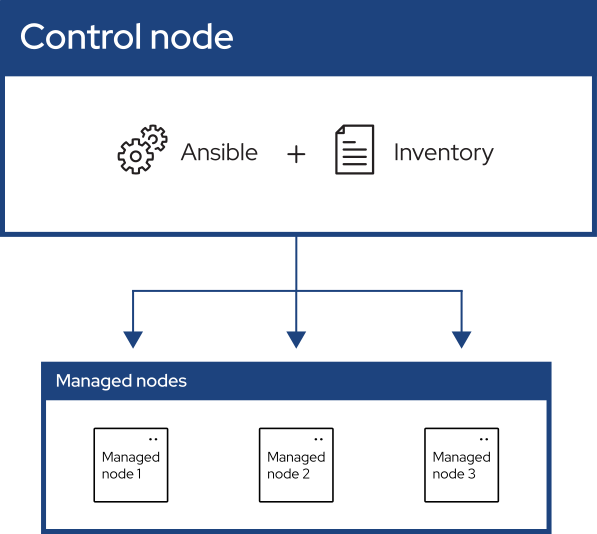

Hello IT. Did you try turning it on and off again?
2025-06-09
I learned all about ansible, which automates the management of remote systems and controls their desired state, from this fantastic YouTube Channel - LearnLinuxTV.
The idea with ansible is to have a certain set of rules, which we call Playbook, define how software gets installed on computer systems at scale.

On your Control Node, device from which you will be running the playbook, you can install Ansible as follows:
$ pipx install --include-deps ansibleConfirm your installation by:
$ ansible --versionThe Playbook is a simple YAML file.
In an Ansible playbook, you can name your tasks, create groups for specific tasks, act as a specific user, and run the tasks needed to perform.
- name: Update web servers
hosts: webservers
remote_user: root
tasks:
- name: Ensure apache is at the latest version
ansible.builtin.yum:
name: httpd
state: latestBest part about using ansible is idempotency. Most Ansible modules check whether the desired final state has already been achieved, and exit without performing any actions if that state has been achieved, so that repeating the task does not change the final state.
You can also protect you sensitive data with Ansible vault. Vault encrypts your sensitive data so you dont have to store keys in plain text. While running the playbook, direct ansible to ask you for vault to decrypt the data before running:
ansible-playbook local.yml --ask-vault-pass --ask-become-pass--ask-become-pass helps you perform tasks that require
administrator privileges.
Find my ansible configuration at mitanshu7/ansible_workstation.
I highly recommend learning about ansible from the mentioned YouTube Playlist.